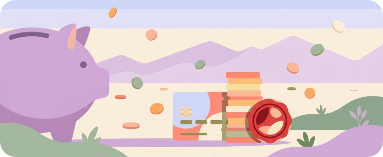
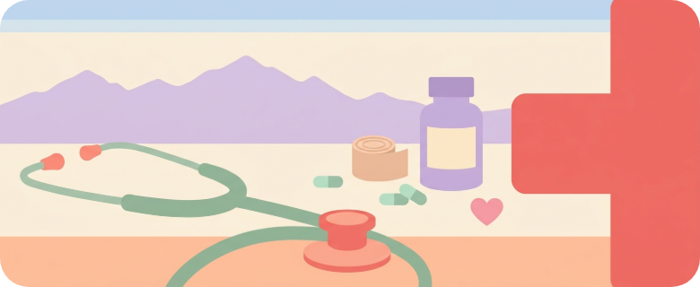
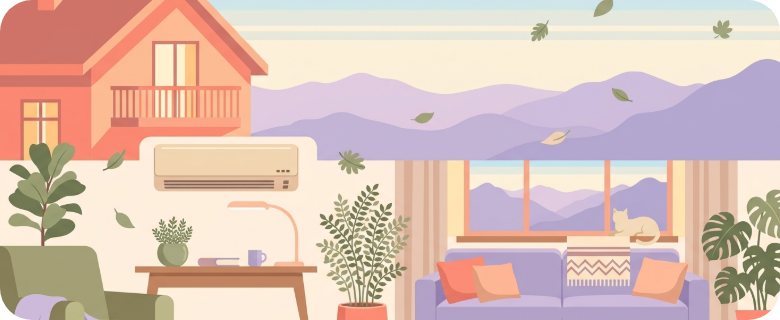

大人的每一件麻煩事，先來這裡看看
報稅、租屋、拜拜、看醫生，第一次遇到不用慌，這裡都幫你整理好了。
 免費資源
免費資源新手福利包
政府補助、免費資源、隱藏撇步
40 篇生活分類

金錢與保險
理財、報稅、保險、勞退
12 篇
醫療健康
看病、健檢、牙科、急救
7 篇
居家生活
租屋、家電、修繕、打掃
16 篇
工作與創業
求職、加班費、離職、勞基法
10 篇交通與旅遊
通勤、出國、大眾運輸、車禍
7 篇
人際與禮俗
紅包、節慶、拜拜、婚喪
8 篇
證件與政府
身分證、護照、戶籍、監理
8 篇數位與防詐
3C、網路、個資、防詐
4 篇島嶼地圖
準備中一張親自走訪、確認過才上架的在地好店地圖。
這是什麼
農產土產、鄉鎮特色、值得專程去的小店——我們一間一間走訪，慢慢畫成一張地圖。
為什麼做
網路上店家資訊又多又亂、踩雷很痛。我們親自去確認，真的好的才放上來，不收業配。
之後會怎樣
地圖會慢慢長出來。你有口袋名單嗎？推薦給我們，我們親自去確認。
初級大人手冊 App
前往 App Store報稅、租屋、看醫生……大人生活的大小事，一支 App 全查得到。